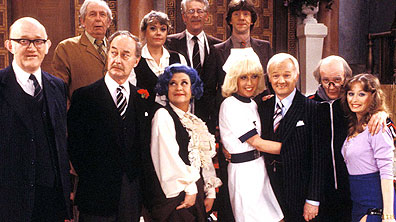

Are You Free...?
I'm free! The snow has stopped falling and the roads should be clear, so if you are free tonight, why not head on out to Elgin to see Carol as Mrs. Slocombe in Are You Being Served?

Are You Being Served? opens tonight at the Kimball Street Theater in the Rider Center of Elgin Academy, in Elgin. I will be there tonight, but if you can't make it tonight, you have five more opportunities: January 9, 15, 16, 22 and 23; Fridays and Saturdays at 8:00pm.
Tickets are $15 for adults or $12 for children and seniors. You can purchase tickets at the door, or online here.
Originally published on the Blogspot site